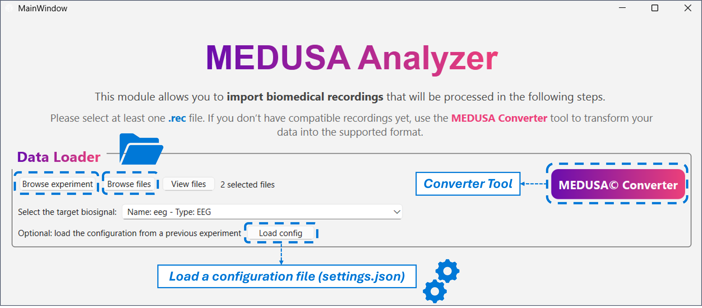
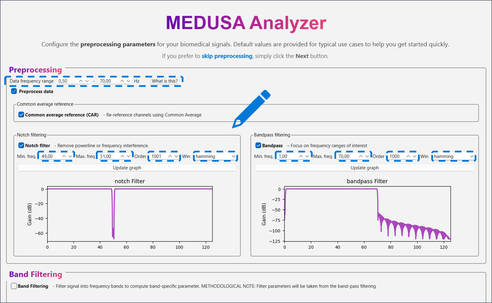
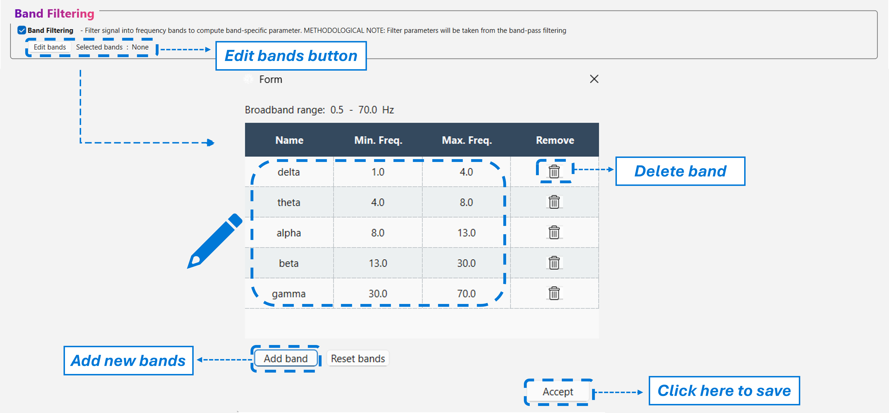
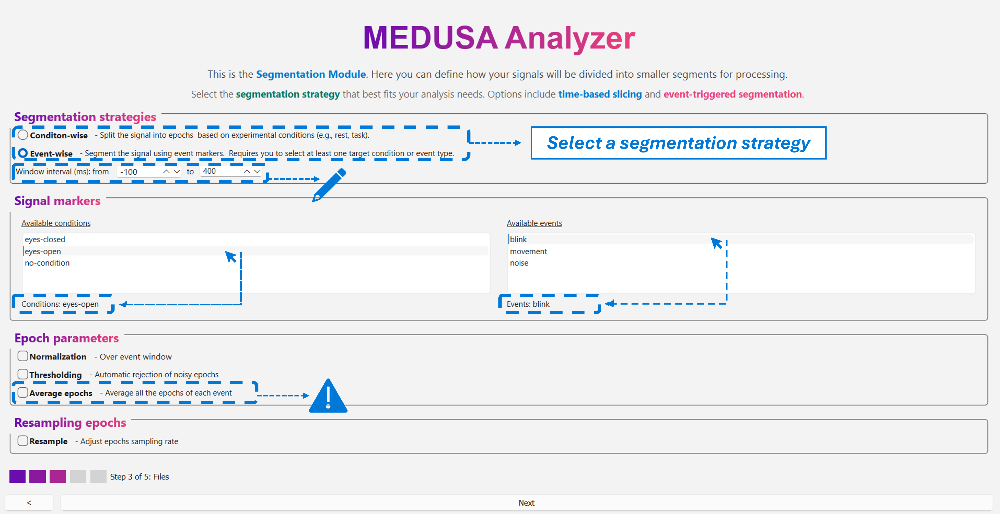
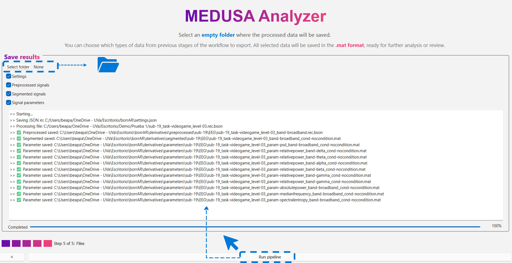

EEG Feature Extraction¶
In the EEG Feature Extraction experiment, users can preprocess EEG signals and extract a wide variety of features for further analysis. This experiment is divided into several windows that guide you through the full workflow — from data loading to saving the results.
1. Loading Data¶
When clicking on EEG Feature Extraction in the main window, the first screen you will see is the Data Loader.
Here, you can: - Load an entire experiment (e.g., a folder containing subjects and sessions), or - Load a single EEG recording file.
The supported file format for EEG data is .rec.bson, which is the native MEDUSA© format, also used across the MEDUSA© ecosystem (e.g., MEDUSA© Platform and MEDUSA© Kernel).

Converter Tool¶
In the Data Loader window, you will find a Converter button.
This tool allows you to convert different biosignal file types to the .rec.bson format.
Tip
It is highly recommended to convert your data first using this Converter before loading it into the Analyzer.
The Converter also organizes converted data into the BIDS structure — the format that MEDUSA© Analyzer is optimized for.
Once your data are ready:
- Click Browse file to load a single .rec.bson file, or
- Click Browse experiment to load an entire experiment folder.
After loading, the detected biosignal type will appear under Selected biosignal — in this case, EEG.
Note
If you have a saved configuration file (settings.json) generated by MEDUSA© Analyzer, you can load it here.
This will automatically apply all the preprocessing, segmentation, and feature extraction parameters from a previous session.
2. Preprocessing¶
After loading the data, click Next to enter the Preprocessing window.
Here you can apply various filters and transformations to your EEG signals.
At the top of the window, you will see a summary of the current frequency range of your data. When you apply filtering (for example, a band-pass filter), this information updates automatically to reflect the new passband of the processed signal.
Available preprocessing options include: - Common Average Reference (CAR) - Notch filter - Band-pass filter
Each filter has customizable parameters such as filter order, window size, and frequency limits. To update filter plots after modifying parameters, click on 'Update graph'.

Band Filtering¶
At the bottom of this window, you can enable band filtering to split your signal into specific frequency bands.
By default, the EEG bands are:
| Band | Frequency Range (Hz) |
|---|---|
| Delta | 0.5–4 |
| Theta | 4–8 |
| Alpha | 8–13 |
| Beta | 13–30 |
| Gamma | 30–70 |
Click Edit Bands to open the editable band table.
You can:
- Rename or modify frequency limits directly in the table.
- Remove bands that you do not wish to include.
- Add new bands by clicking Add Band.

Warning
Band names must not contain spaces.
For example, use beta1 and beta2 instead of beta 1 and beta 2.
Note
When band filtering is enabled, all features will be computed both for the broadband signal and for each selected frequency band.
3. Segmentation¶
Click Next to proceed to the Segmentation window.
You can choose to segment the EEG signal by:
- Condition, or
- Event.
Detected conditions (e.g., eyes open, eyes closed) or events (e.g., stimulus, blinks) are automatically listed.
Select your segmentation mode and specify the epoch window (e.g., from -100 ms to 700 ms around an event).
Additional options include: - Stride segmentation – to define overlapping epochs (only for condition-based segmentation strategy. - - Normalization – choose between mean-only or mean+standard deviation normalization. - Automatic rejection (thresholding) – epochs exceeding a given number of standard deviations will be discarded. - Average epochs – averages the resulting parameters across all epochs in the recording. - Resampling – specify a new target sampling rate.
Tip
It is recommended to enable Average epochs for better visualization and summary statistics in later analyses.

4. Feature Extraction¶
In the Feature Extraction window, you can compute a wide range of features grouped into several categories:
-
Time-domain features
Mean, variance, skewness, kurtosis, etc. -
Spectral features
Power Spectral Density (PSD), absolute and relative power, median frequency, spectral entropy, etc. -
Non-linear features
-
Central Tendency Measure (CTM)
Quantifies the dispersion of points in phase space.- Parameter:
radius— defines the neighborhood size; smaller radii capture finer signal fluctuations.
- Parameter:
-
Sample Entropy (SampEn)
Measures the unpredictability of the signal.- m: embedding dimension or pattern length (commonly 2).
- r: tolerance threshold, typically a proportion of the signal’s standard deviation.
-
Multiscale Sample Entropy (MSE)
Extends SampEn across multiple temporal scales to characterize complexity.- max scale: maximum number of coarse-grained scales.
- m: embedding dimension.
- r: similarity tolerance.
At each scale, the signal is coarse-grained before computing entropy.
-
Lempel–Ziv Complexity (LZC)
Quantifies the complexity of a signal based on the number of new binary patterns encountered while scanning through it. -
Multiscale Lempel–Ziv Complexity (MLZC)
Computes LZC across multiple coarse-grained scales.- Scales must be manually entered as a list, e.g.:
[1, 3, 5] - Important: scales must be odd numbers.
- Scales must be manually entered as a list, e.g.:
-
Connectivity metrics
-
Amplitude-based metrics
- IAC (Inter-areal Amplitude Correlation)
- AEC (Amplitude Envelope Correlation)
Includes an orthogonalization option to reduce spurious coupling due to volume conduction.
-
Phase-based metrics
- wPLI (Weighted Phase Lag Index)
- PLI (Phase Lag Index)
- PLV (Phase Locking Value)
Note
If you previously enabled band filtering, each feature will be computed both for the broadband signal and for every selected frequency band.
Simply select the desired metrics using the corresponding checkboxes.
5. Saving Results¶
Finally, click Next to open the Save Results window.
At the top, select an empty folder where your results will be stored.
Warning
The output folder must be empty before saving results.
You can then choose which stages of the analysis to save:
- Settings (.json) – contains all configuration parameters.
It is strongly recommended to save this file for reproducibility.
- Preprocessed signal
- Segmented signal
- Extracted features

Reusing Configurations¶
The saved .json configuration file can later be loaded in the Data Loader window, automatically restoring all parameters used in the original experiment.
This allows you to share your full pipeline setup with other users to replicate results.
Output Structure (BIDS Format)¶
All saved data follow the semi-BIDS directory structure, consistent with MEDUSA© Analyzer conventions:
[selected_folder]/
├── settings.json
└── derivatives/
├── preprocessed/
│ └── EEG/
├── segmented/
│ └── EEG/
└── parameters/
└── EEG/